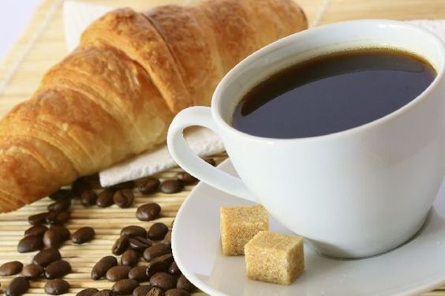

I am from Western Vietnam. I would like to introduce to everyone knowing a typical product from the Mekong Delta is named "Thotnot sugar" or another English name is "Jaggery" or Palm sugar".

Thotnot is a local name from the Khmer language living in the South, one of the 54th ethnic groups in the beautiful Vietnamese country. Thotnot sugar is made from the pistil of the palm trees which are associated with Khmer ethnic group, and people see them as a cultural symbol of Khmer community. Besides the palm tree is also considered a symbol of the patience and hard work of the Khmer.

The story of making sugar from this palm tree is a myth that has been passed down through the ages. The story is that a farmer was sleeping under the palm tree; he suddenly woke up because a sweetwater dropped to his mouth. He sat up and looked around but not see anything. He felt curious, so he climbed the tree to see that drop of water had just fallen from the bud of the broken palm tree. He used a bamboo tube containing and brought to show off his family. So since then, people still keep the custom of using a bamboo tube as a mean of collecting palm juice from the trees.

However, this natural juice was not stored for a long time, so people cooked and condensed it into sugar as today. The technology of making sugar is also very meticulous and depend on skills.

The main recipe is from the pistil has sweet taste contain many healthy minerals such as preventing anaemic, good for skin, use to treat flu and cough, purify the body, improve digestion, promote weight loss, replenish energy.

Through many decades thot not sugar has been recognized as a unique product with retaining the natural and original taste as people in here.
Palm sugar is also mainly used as a flavour for food processing, with a cool taste, contributing to a variety of dishes imbibed the cultural identity of Vietnam. You can use it to prepare beverages such as tea, coffee, mix many kinds of favourite drinks.

With the particular culture in Finland that most Finns like to drink coffee a lot, why not try it with a small spoon or thot not sugar tablet. It is fantastic. Let's try a cup of coffee with palm sugar. It is a great time for you.
